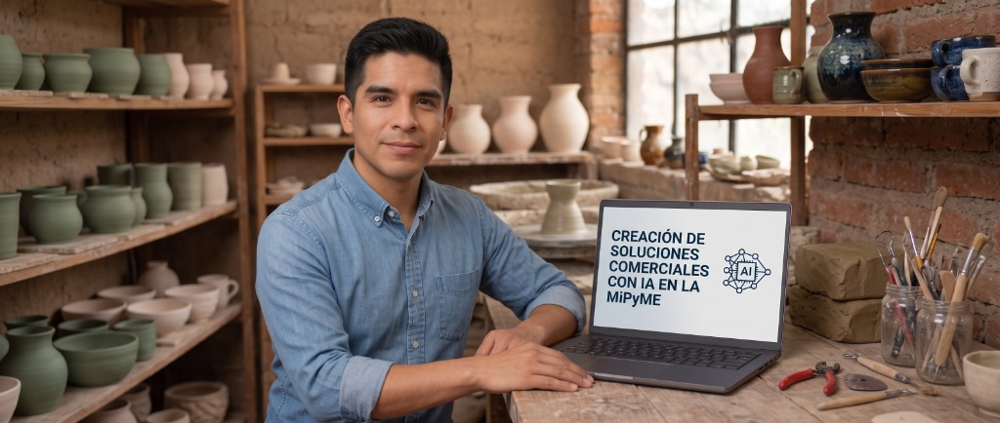
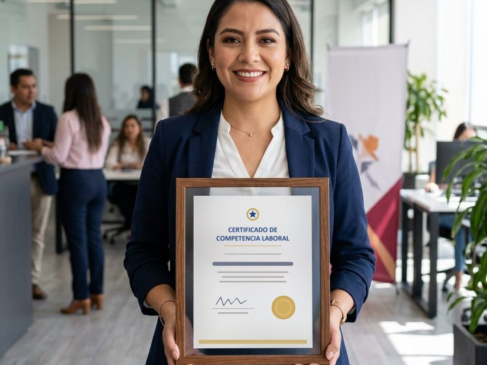

Ver transcripción
Te damos la bienvenida al curso EC1835: Creación de soluciones comerciales con Inteligencia Artificial en la MiPyME. Este estándar es para quienes crean algo nuevo para una MiPyME. No se limita a optimizar lo que ya existe: pide investigar una necesidad, conceptualizar una solución comercial, construir un prototipo con inteligencia artificial y validarlo con usuarios. Es innovación con método. Y como toda innovación que vale, empieza por escuchar antes de construir. En todo el curso te acompaña el caso de Artesanías Tonalli, un taller familiar de barro bruñido. Lucía, su fundadora y maestra alfarera, ya vende en línea, pero describir cada pieza única le toma cerca de veinte minutos, y cuando el color no queda preciso, le devuelven piezas. Rosa, que maneja las redes y sube las piezas a la tienda, trabaja con ella. Y Diego, consultor en desarrollo de soluciones comerciales con inteligencia artificial, aplica con ambas el proceso completo del estándar. El EC1835 tiene cuatro elementos: identificar necesidades y oportunidades de mercado, conceptualizar la solución, desarrollar el prototipo y validarlo con usuarios. Los cuatro piden productos y conocimientos; los tres últimos, además, desempeños que se observan en vivo. Al terminar, sabrás qué se te pedirá en tu evaluación y tendrás plantillas y prácticas para prepararte con confianza. Empecemos.
A Presentación

Este curso está dedicado en exclusiva al EC1835 (Ruta B): Creación de soluciones comerciales con Inteligencia Artificial en la MiPyME. Es el documento que te acompañará a lo largo de tu preparación y al que volverás una y otra vez hasta el día de tu evaluación.
El EC1835 está dirigido a quienes trabajan en el ciclo completo de innovación orientada al usuario: escuchas la necesidad de alguien, identificas una oportunidad de mercado que nadie ha resuelto bien, conceptualizas una solución con IA, construyes un prototipo funcional y lo llevas a prueba con usuarios antes de recomendarlo o escalarlo.
El EC1835 es para quien innova desde la necesidad del usuario. No asumes que sabes qué necesitan: lo investigas. No implementas lo que ya existe: conceptualizas lo que debería existir. No lanzas sin evidencia: prototipas y validas con usuarios. Si tu proceso de trabajo se parece a esto, este es tu estándar.
Este curso te guiará a través de cuatro tareas interconectadas: comprender con precisión qué se te evaluará, preparar las evidencias que requerirás, practicar los desempeños que tu evaluador observará y articular ese aprendizaje alrededor de un caso pedagógico concreto que recorrerás de principio a fin.
B Sobre este curso
Este curso se imparte en línea, en formato asincrónico: estudias a tu propio ritmo.
Beneficios
Posterior al curso de preparación, contarás con las herramientas y conocimientos necesarios para registrarte ante una Entidad de Certificación y Evaluación como candidato a la certificación mediante SEP-CONOCER en el estándar de competencia EC1835: Creación de soluciones comerciales con Inteligencia Artificial en la MiPyME.
Práctica
Cada elemento incluye preguntas de práctica sin valor en una calificación: te orientan sobre qué conocimientos reforzar antes de tu evaluación.
Enfoque didáctico
Está orientado a la construcción significativa del conocimiento mediante la presentación de conceptos clave con casos y ejemplos. Adicionalmente tendrás acceso a plantillas alineadas a los criterios del estándar de competencia para que puedas usarlas en la construcción de tus evidencias de evaluación.
Temas que aborda
El curso cubre los cuatro elementos del EC1835, con los títulos que les da el estándar, y cierra con tu ruta de preparación:
- Elemento 1 (E5825). Identificar necesidades del usuario y oportunidades de mercado de soluciones comerciales en la MiPyME mediante Inteligencia Artificial
- Elemento 2 (E5826). Conceptualizar soluciones comerciales con Inteligencia Artificial en la MiPyME
- Elemento 3 (E5827). Desarrollar el prototipo de la solución comercial con Inteligencia Artificial en la MiPyME
- Elemento 4 (E5828). Validar el prototipo de la solución comercial mediante usuarios con Inteligencia Artificial en la MiPyME
- Ruta de preparación. Tu ruta de preparación recomendada
La ruta de preparación te da más información sobre la aplicación de la evaluación con fines de certificación y sobre el camino que te recomendamos.
Plan de estudio sugerido
Si quieres una guía, te sugerimos distribuir tu estudio por cuenta propia en 4 semanas. Es una sugerencia: ajústala a tu ritmo.
| Semana | Actividad |
|---|---|
| Semana 1 |
• Estudio independiente: Bienvenida y contexto • Estudio independiente: Elemento 1 |
| Semana 2 |
• Estudio independiente: Elemento 2 • Prácticas del Elemento 1 y del Elemento 2 |
| Semana 3 |
• Estudio independiente: Elemento 3 • Prácticas del Elemento 3 |
| Semana 4 |
• Estudio independiente: Elemento 4 y ruta de preparación • Prácticas del Elemento 4 y repaso final |
C A quién está dirigido
El EC1835 está dirigido a quienes trabajan en el ciclo completo de innovación orientada al usuario: escuchas la necesidad de alguien, identificas una oportunidad de mercado que nadie ha resuelto bien, conceptualizas una solución con IA, construyes un prototipo funcional y lo llevas a prueba con usuarios antes de recomendarlo o escalarlo.
Conviene que ubiques este estándar dentro de los cuatro estándares CONOCER de IA para MiPyMEs:
- Ruta A · EC1830 · Adopción de soluciones de inteligencia artificial en los procesos de la MiPyME. Es para quien planea, adopta y evalúa soluciones de IA dentro de los procesos de una MiPyME. Si tu trabajo es acompañar esa adopción, tu estándar es el EC1830.
- Ruta C · EC1848 · Prestación de servicios de consultoría en mercadotecnia digital con Inteligencia Artificial en la MiPyME. Es para quien, como consultor, planea la estrategia de mercadotecnia digital, genera el contenido con IA (texto, imagen, audio y video), implementa campañas y propone su optimización. Si tu trabajo central es esa consultoría, tu estándar es el EC1848.
- Ruta D · EC1836 · Creación de soluciones tecnológicas con Inteligencia Artificial en la modernización digital de la MiPyME. Es para quien diagnostica oportunidades de modernización digital, construye una solución tecnológica con IA, la implementa y la optimiza. Si ese es tu trabajo, tu estándar es el EC1836.
D Antes de continuar

Te recomendamos este orden: primero el diagnóstico, después el Curso introductorio y luego este curso. Aquí repasamos los elementos del marco general que conviene tener presentes.
La certificación CONOCER, en resumen
El estándar EC1835 se publicó en el Diario Oficial de la Federación el 28 de octubre de 2026. La certificación que obtendrás es expedida por la Secretaría de Educación Pública a través del CONOCER. El Certificado se incorpora al Registro Nacional de Personas Certificadas y tiene validez en todo el territorio nacional. Para certificarte en el EC1835 no se requiere título profesional (así lo indica su propósito).
La lógica de la evaluación
La evaluación CONOCER se construye sobre evidencias verificables. No es un examen teórico: lo que se te evaluará es tu capacidad de ejecutar la función con calidad. Tu evaluador combinará cuatro fuentes de información: desempeños, productos, conocimientos y actitudes/hábitos/valores.
E Ficha técnica del estándar
| Código y título oficial | EC1835 · Creación de soluciones comerciales con Inteligencia Artificial en la MiPyME |
| Nivel SNC | Tres |
| Número de elementos | Cuatro |
| Comité de Gestión por Competencias | de la Asociación Latinoamericana de Profesionales en Seguridad de la Información (ALAPSI) |
| Organizaciones participantes en el desarrollo del EC | Asociación Latinoamericana de Profesionales en Seguridad Informática, A. C. (ALAPSI) · Benemérita Universidad Autónoma de Puebla (BUAP) · Fundación para el Desarrollo Económico y Social, A. C. (FUNDES) · Instituto Estatal de Capacitación del Estado de Guanajuato (IECA) · Sistema Avanzado de Bachillerato y Educación Superior en el Estado de Guanajuato (SABES) · Universidad Popular Autónoma del Estado de Puebla (UPAEP) · Universidad Tecnológica de Huejotzingo (UTH) |
| Descripción del nivel | Desempeña actividades tanto programadas, rutinarias como impredecibles. Recibe orientaciones generales e instrucciones específicas de un superior. Requiere supervisar y orientar a otros trabajadores jerárquicamente subordinados. |
| Aprobación por el Comité Técnico del CONOCER | 24 de septiembre de 2026 |
| Publicación en el Diario Oficial de la Federación | 28 de octubre de 2026 |
| Periodo de revisión | Dos años |
| Clasificación SCIAN | 541510 — Servicios de diseño de sistemas de cómputo y servicios relacionados |
| Grupo SINCO | 2271 — Desarrolladores y analistas de software y multimedia |
| Ocupaciones asociadas (SINCO) | Analista de sistemas · Asesor y consultor informático · Diseñador de programas de computación |
| Ocupaciones no contenidas en el SINCO y reconocidas en el Sector | Consultor de IA para MiPyMEs · Desarrollador de productos digitales con IA · Diseñador de soluciones de IA para negocios |
| Modalidades de evaluación | En el lugar de trabajo (recomendado) o de forma simulada; presencial o remota mediante plataformas de videoconferencia |
| Duración estimada de la evaluación | 5 horas: 2.5 horas en gabinete y 2.5 horas en campo |
| Requisito de título profesional | No requerido (para certificarse en el EC no deberá ser requisito poseer título) |
El mapa funcional del EC1835
El mapa funcional del EC1835 se organiza como un ciclo de innovación orientada al usuario: cuatro elementos (E5825 a E5828) que van desde la identificación de necesidades hasta la validación del prototipo con usuarios. Los cuatro elementos son secuenciales y cada uno produce evidencias que alimentan al siguiente.
F Conoce a Artesanías Tonalli
A lo largo de este curso usaremos una MiPyME ficticia como hilo narrativo. El caso está diseñado para que puedas ver y entender los conceptos del estándar aplicados a una situación representativa del tejido empresarial mexicano.
Las personas del caso
El proyecto que recorrerá Diego
A lo largo de este curso, seguirás al consultor Diego apoyando a Lucía a desarrollar un asistente de IA que genera la descripción de cada pieza a partir de una foto, con su color real y con la voz del taller. El asistente no publica solo, no fija precios y no responde a clientes: Lucía revisa cada descripción antes de publicarla en la tienda en línea.
Ese proyecto es el hilo que recorrerá Diego y corresponde con los cuatro elementos del EC1835:
- Identificar: Entrevistar a compradores de artesanía en línea para entender qué información buscan antes de comprar una pieza única y qué los hace decidirse o desistir. Con esto y con el levantamiento de tres semanas con Lucía, Diego identifica el problema: describir cada pieza toma unos 20 minutos y el color no siempre queda preciso.
- Conceptualizar: Diego facilita una sesión de ideación de 2 horas con Lucía y Rosa: acuerdan una pregunta generadora, generan 6 ideas ellas, las amplían con IA hasta 14 y las clasifican en tres bloques. Lucía y Rosa eligen 3, y Diego prepara con ellas la propuesta del prototipo.
- Desarrollar: Diego construye en dos semanas el primer prototipo del asistente: recibe una foto con una tarjeta gris de referencia y devuelve la descripción de la pieza con su color real y la voz del taller. Lo presenta a Lucía con tres casos de uso y prueba el barro negro bajo tres luces.
- Validar: Durante cuatro semanas, 12 compradores que ya habían comprado en el taller evalúan las descripciones de 40 piezas. Diego presenta los resultados contra las metas del plan y recomienda iterar y luego implementar.
El caso es ficticio, pero los retos son representativos. Muchos talleres artesanales mexicanos enfrentan exactamente esta paradoja: tienen productos únicos de alto valor que no saben cómo comunicar en los canales digitales donde sus compradores potenciales ya están buscando.
¿Listo para empezar?
El siguiente capítulo desarrolla el Elemento 1: identificar necesidades del usuario y oportunidades de mercado. Ahí encontrarás los productos, conocimientos y AHV que se evaluarán en esta primera etapa del ciclo de innovación.